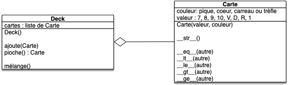

Projet agrégation : cartes
Nous allons ici continuer ce que nous avons commencé lors des précédents projets cartes et utiliser l'agrégation pour pouvoir jouer à la bataille.
Pour les besoins de ce projet, nous allons présupposer que vous avez une classe Carte qui fonctionne. La version minimale que nous allons utiliser ici est disponible ci-après. Mais ne vous sentez pas obligé.e de l'utiliser.
une implémentation de la classe Carte
une implémentation de la classe Carte
fichier carte.py :
class Carte:
VALEURS = Enum(
"valeur",
[
("Sept", 7),
("Huit", 8),
("Neuf", 9),
("Dix", 10),
("Valet", 11),
("Dame", 12),
("Roi", 13),
("As", 14),
],
)
COULEURS = Enum(
"Couleur", [("Pique", 4), ("Cœur", 3), ("Carreau", 2), ("Trèfle", 1)]
)
def __init__(self, valeur, couleur):
self._couleur = couleur
self._valeur = valeur
def __str__(self):
valeur = ["7", "8", "9", "10", "V", "D", "R", "1"]
couleur = ["♣︎", "♦", "♥", "♠"]
return valeur[self._valeur.value - 7] + couleur[self._couleur.value - 1]
def __eq__(self, other):
return (self._valeur == other._valeur) and (self._couleur == other._couleur)
def __ge__(self, other):
return (self._valeur.value > other._valeur.value) or (
(self._valeur.value == other._valeur.value)
and (self._couleur.value >= other._couleur.value)
)
def __ne__(self, other):
return not (self == other)
def __gt__(self, other):
return (self != other) and (self >= other)
def __le__(self, other):
return other >= self
def __lt__(self, other):
return (other > self)
fichier test_carte.py :
from carte import Carte
def test_constructeur():
assert isinstance(Carte(Carte.VALEURS.sept, Carte.COULEURS.trèfle), Carte)
def test_str():
assert str(Carte(Carte.VALEURS.sept, Carte.COULEURS.trèfle)) == "7♣︎"
def test_operator():
dix_cœur = Carte(Carte.VALEURS.dix, Carte.COULEURS.cœur)
dix_carreau = Carte(Carte.VALEURS.dix, Carte.COULEURS.carreau)
assert dix_cœur == dix_cœur
assert dix_cœur != dix_carreau
assert dix_cœur <= dix_cœur
assert dix_cœur > dix_carreau
assert dix_carreau < dix_cœur
Le but des projets carters est de pouvoir jouer à une variante de la bataille :
But
On veut pouvoir mélanger un jeu de 32 cartes (sans joker) puis le séparer en 2 pioches de 16 cartes, un tas par joueur.
A chaque tour les deux joueurs prennent la première carte de leur pioche et la révèle. Le joueur ayant la plus grande carte (7 < 8 < 9 < 10 < V < D < R < 1 et si égalité de rang alors : ♠ > ♥ > ♦ > ♣︎) prend les deux cartes et les place dans sa pile de défausse (initialement vide).
Lorsqu'un joueur doit prendre une carte alors que sa pioche est vide, il mélange les cartes de sa défausse qui forment une nouvelle pioche. Si la pioche et la défausse sont vides, le joueur perd la partie.
Classe Deck
Vous allez implémenter une classe Deck permettant de regrouper toutes les méthodes nécessaires au maniement d'un ensemble de cartes.
Proposez une modélisation d'une classe UML d'une classe Deck permettant de jouer au jeu simplifié de la bataille en précisant son lien avec la classe Carte si l'on suppose un deck initialement vide.
corrigé
corrigé

Code
Implémentez la classe Deck dans le fichier deck.py et ses tests dans le fichier test_deck.py
Puisque l'attribut cartes de la classe Deck est une liste python, vous pourrez avantageusement utiliser :
- les méthodes
list.appendetlist.popdes list pur respectivement ajouter et supprimer une carte au deck (voir la partie 5.1 du tutoriel) - la fonction
shuffledu modulerandompour mélanger les cartes
Pour pouvoir jouer au jeu de la bataille, il faut une fonction qui crée un jeu :
Créez une fonction jeu32() dans le fichier deck.py qui rend un Deck contenant un jeu de 32 cartes.
Enfin, il faut un moyen de facilement transférer des cartes d'un Deck à l'autre :
Créez et testez une méthode Deck.transfert(deck, nombre) qui transfère les nombre premières cartes du deck au deck passé en paramètre.
Jeu
Vous pouvez maintenant finir le projet en codant le jeu !
La règle du jeu est :
- mélangez un jeu de 32 cartes en deux pioches de 16 cartes, une pour chaque joueur (vous pourrez commencer par créer un paquet de 32 cartes, puis le mélanger et enfin distributer les 16 première cartes à un joueur et les 16 dernières à l'autre)
- chaque joueur dispose également d'une défausse, initialement vide
- N = 1
- chaque joueur dévoile la carte du dessus de leur pioche
- le joueur ayant la carte la plus élevée remporte la carte de l'adversaire et pose les deux cartes (la sienne et celle de son adversaire) dans sa défausse
- si un joueur n'a plus de cartes dans sa pioche, il mélange les cartes de sa défausse pour en faire un nouvelle pioche
- si un joueur n'a plus de carte dans sa pioche, il perd la partie
- N = N + 1
- si N est inférieur ou au nombre maximum de tour, retour en 4, sinon le jeu s'arrête.
Codez le jeu dans un fichier main.py